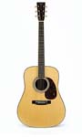
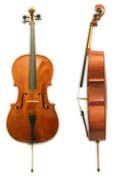
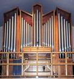
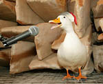

Anechoic Sources
The anechoic sources for these simulations came from a variety of sources:
SpeechThe speech signal was segment taken from a close mic recording of the famous "rally the troops" speech from Shakespeare's Henry V play. The recording was obtained from Henry5.mp3 by acclivity from The Freesound project. The .mp3 was converted to a 44.1 kHz .wav file and background hiss was removed using Adobe Audition. This sample is licenced under the Creative Commons License |
|
|  |
GuitarThe guitar sample is an excerpt from Bourre by J.S.Bach taken from the Bang & Olufsen "Music for Archimedes" anechoic recording CD that comes with CATT acoustics.@ Bang and Olufsen |
|  |
CelloThe cello sample is an exceprt from "Variation and Theme No. 2" by Weber also taken from the Bang & Olufsen "Music for Archimedes" anechoic recording CD that comes with CATT acoustics. @ Bang and Olufsen |
OrchestralThe orchestral sample is an excerpt from the Overture from Mozart's "Le Nozzi di Figaro" taken from the Denon "Anechoic Orchestral Music Recording" CD. @ Denon Corp. |
|
|  |
OrganAnechoic recording of a church organ is a very difficult task since large church organs cannot be placed in anechoic chambers for recordings. In this case the file was electronically generated using a MIDI file of Bach's "Tocatta and Fugue in D Minor" and the Audio Compositor MIDI renderer software package. The organ "soft font" was obtained from the Chaos Bank Sound Font. |
|  |
DuckThe anechoic recording of a duck quack was obtained in .wav format from theThe University of Salford Acoustics Web page . The photo was taken from the Salford web page and shows Daisy the Duck in the Chamber. @ University of Salford. |

|
Except where noted, these animations, auralizations, and visualizations are © 2006 by
Ralph T. Muehleisen and are licenced under a
Creative Commons Attribution-NonCommercial 2.5 License.
|